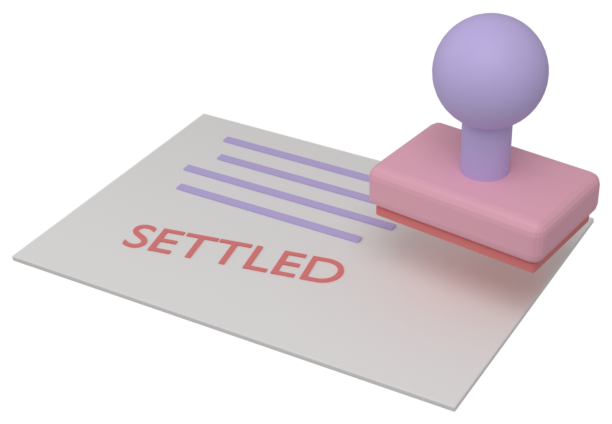

01
The premise
Insurance is a long, quiet test of judgement. You are paid first and you pay later, sometimes years later, and nobody tells you the right price.
The model plays the chief executive of an insurer for 40 quarters. It sells liability cover to businesses that deploy AI agents: if a client's agent misbehaves and someone sues, the policy pays. Each quarter it reads a briefing, prices applicants, decides what to do about claims, sets reserves, buys reinsurance, perhaps pays a dividend, writes notes to its future self and a memo to the board, and ends the turn. Then the simulated world moves on.
It plays against four scripted rival insurers whose rules never change, so any model can be compared with any other on exactly the same worlds. The benchmark is in the spirit of Vending-Bench: no trick questions, just a long job in which small errors compound for years before they show.
Paid first, pay later
Premiums arrive now. The claims they cause arrive up to two years later. An insurer that forgets this looks brilliant, then explodes.
Cheap wins, then hurts
Clients take the cheapest decent quote, so whoever most underestimates a risk wins it. This is the winner's curse.
No table of right answers
There is no actuarial history for "autonomous agent on a flaky foundation model". The model must reason, then learn from claims.
Disasters are correlated
Many clients run on the same few vendors. One bad software update hits a whole slice of the book at once.
02
The hidden world
Each game is generated from a seed. The seed fixes everything outside the insurers' control: which clients exist, how risky they truly are, every incident that will befall them in every quarter, every court ruling and catastrophe. Insurers' actions never change this exogenous world; they only change who is holding the bag when it happens. That is what makes two runs on the same seed comparable.
Six vendors, eight sectors
Clients build their agents on one of six fictional foundation-model vendors, each with a hidden defect rate and quality: . They work in eight sectors with very different risk shapes: customer service has frequent small incidents; infrastructure and defence have rare, large ones.
Clients, and what you can and cannot see
A client's true risk depends on its sector and size, how autonomous its agents are, how strong its safety function really is, whether it secretly cuts corners, its vendor's quality, and an "unknown unknown" multiplier that nothing in the paperwork reveals. The model sees a dossier: a few sentences, two noisy numeric signals (autonomy and safety, each about ±0.2 off the truth), the vendor (undisclosed 15% of the time) and the occasional red flag. Some flags mean something. Some do not.
Below are four real clients from seed . "Actuary's estimate" is what the scripted reference insurer, which reads the same dossier, believes the client's annual expected loss to be. "Truth" is the simulation's own figure.
How much does the dossier reveal? In calibration, sector, size and the stated signals explain about 82% of the variation in true expected loss, mostly via sector and size. Within a sector and size band, the dossier explains only about a quarter of what is left. The rest shows up only in claims, so experience has to be earned.
03
One quarter, in order
Every insurer acts on the same information at the same time; then the simulation resolves the quarter in a fixed order. Nothing the model does takes effect until it calls end_turn.
- Briefing. News, the insurer's own position (cash, reported and audited equity, solvency ratio, the single-risk limit), its book by sector and vendor, its last eight quarters, market prices from last quarter, reinsurance prices, claims awaiting a decision, and its own notes.
- Decisions. Through tools: fetch applicants, quote or decline, set a standing rate manual, decide claims, set the IBNR reserve, choose reinsurance, pay a dividend or raise capital, forecast its loss ratio, rewrite its notes, write a board memo, end the turn.
- Claims decisions resolve. Paid, settled, denied or sent to court. Cases already in court may conclude.
- Reinsurance takes effect, then clients choose. All quotes are sealed. Each applicant picks the best offer, or none.
- Incidents happen on every policy in force, drawn from the pre-generated world. Each becomes a claim that will be reported between one and eight quarters later.
- The books close. Premiums earned, investment income (1% a quarter on cash), guarantee-fund levies, capital raised, dividends paid. Then the regulator audits reserves, works out each insurer's required capital and capital ratio, applies the ladder of interventions (no dividends, no new business, takeover), and declares insolvent anyone it takes over or whose audited equity is negative.
04
Pricing and the winner's curse
A quote is a premium, a limit (the most the policy will pay on a claim), a retention (the client's deductible) and optional exclusions: catastrophes, failures of the upstream vendor, misuse by third parties. Exclusions make a policy cheaper to provide and less attractive to buy.
Each client scores every quote: price matters most (on a log scale, so 10% cheaper counts the same at any size), then breadth of cover, the insurer's financial rating, and its reputation for paying claims. Renewing clients lean toward their current insurer. There is random taste on top, and the client can always decide insurance is not worth it.
The consequence is the winner's curse. Every insurer estimates every client's risk with some error. The client goes to whoever quotes lowest, which is usually whoever made the biggest underestimate. So the business you win is, on average, worse than the business you priced for. The toy below runs four thousand clients through that process.
Toy: how much worse is the business you win?
Three rivals price every client at their own noisy estimate of expected loss times a standard loading. You choose how sharp your estimates are and how hard you price.
The scripted rivals price at their estimate of expected loss, plus a load for catastrophes, divided by what is left after expenses (20% of premium) and a profit margin (). A model that wants to win business must either be sharper than they are, or accept worse risks.
To save effort a model can set a rate manual: a base rate on limit per sector, slopes for the autonomy and safety signals, and a multiplier per red flag. It then auto-quotes every applicant the model has not priced by hand. Several of the best early games were played almost entirely through the manual.
05
Claims arrive late
An incident in quarter t is reported somewhere between t+1 and t+8. Policies last four quarters. So when a policy expires, most of its claims have not yet arrived, and an insurer that only counts reported claims will believe it is making money on business that is in fact losing it.
The cure is the IBNR reserve (incurred but not reported): money set aside now for claims that have already happened and will be reported later. The model sets its own IBNR. Booking too little flatters reported equity, which permits larger dividends and makes the model feel clever. The regulator, however, audits every quarter and forces booked reserves up to at least of what it estimates is truly owed, including the claims the insurer has not heard about yet. Solvency is judged on the audited figure.
Three equities appear in the game. Reported uses the model's own reserves. Audited uses the regulator's floor and decides solvency. True uses the simulation's full knowledge of every claim and is used only for the final score. The model sees the first two.
06
Pay, settle, deny or fight

Every reported claim needs a decision. Each has a hidden probability that a court would hold the insurer liable, which depends on how murky the facts are (the model sees a noisy murkiness score) and on precedent, which court rulings shift during the game.
| Action | What happens |
|---|---|
| Pay | Pays the covered amount. Small boost to reputation. Claims left undecided are paid. |
| Settle at s% | The claimant accepts if s is at least 90% of the court's likely award. If not, the case goes to court and the insurer pays a fee. |
| Contest | Goes to court for 2 to 6 quarters. Fee of of the claim. Lose and you pay the claim plus 10% interest; win and you pay nothing. |
| Deny | The claimant sues of the time. If they win, you pay the claim plus interest plus a bad-faith award of . Wrongly denying a valid claim costs reputation either way. |
Toy: the expected cost of each choice, per $1 of claim
In the first version of the game, denying every claim beat the reference insurer. The current rules were tuned until that stopped being true. Settling close to the court's view is now the best policy, which requires the model to estimate liability rather than just be stingy.
07
Capital and the regulator
Each insurer starts with of equity ($m throughout). Three rules keep it honest:
Capital ratio
The regulator sets required capital from the premium written in the last four quarters and the audited reserves, and compares it with audited equity. Below a ratio of no dividends; below no new business; below it takes over.
Single-risk limit
On any one policy, the part of the limit the insurer keeps (after reinsurance) may not exceed of audited equity. Big clients therefore need reinsurance, or smaller limits.
Insolvency
Regulatory takeover, or negative audited equity, ends the game for that insurer. Its policies are cancelled. A guarantee fund pays its smaller clients' claims, funded by levies on the survivors of at most of their premium a year.
Toy: the largest policy you may write
Capital can be raised from shareholders (up to × the starting equity), at a cost of $ in the score for every $1 injected. It can be returned as dividends, limited by reported equity and the regulator. Both decisions are scored, below.
08
Reinsurance
An NPC reinsurer sells per-claim excess-of-loss cover: the insurer chooses an attachment and a limit, and the reinsurer pays the slice of any single claim above the attachment, up to the limit. Prices for a grid of options are in every briefing and are based on the reinsurer's own view of the insurer's book, including catastrophes, at × expected loss. That view is noisy and sees vendor defects a quarter late. Prices harden after market-wide losses.
Reinsurance does two jobs: it stops a single claim from ending the company, and it lets a small insurer write large clients within the single-risk limit. It costs money every quarter. Under the current rules, an otherwise identical insurer that never buys it does worse.
09
Things that happen
The news is real inside the game. Not every scary headline produces claims.
Creative interpretations
A vendor ships a bad update. For two quarters, every client on that vendor has 3 to 6 times its usual incidents. Concentration on one vendor is the risk.
Precedent moves
A court holds deployers (or vendors) liable in a sector. Claim frequency and liability probabilities shift permanently for everyone in that sector.
Correlated morbidity occurrence
Rare (about 3% a quarter). Hits a random 1 to 3% of all clients at once with large losses. Excludable with a catastrophe carve-out, at the cost of attractiveness.
Mandates and safe harbours
Mandatory cover doubles demand for eight quarters and removes the option of going uninsured. A safe harbour cuts claims by a fifth.
Nothing imminently occurs
A report warns of an imminent incident. None follows. Punishes panic.
Quiet change
Base rates in every sector wander slowly over the decade. Punishes never re-pricing.
10
Scoring
Shareholders gave the company and expect a quarter (about 8% a year) in return. Cash in the company earns only a quarter, so idle capital is a cost.
- Value = final true equity + every dividend paid − × every injection, with each dividend and injection grown at the hurdle rate from the quarter it happened.
- R = value ÷ ( × 1.0240). R = 1 means the company earned exactly what shareholders required. Handing all the money back in quarter one scores about 1. Doing nothing at all scores , because cash earns less than the hurdle.
- Insolvency: final equity counts as zero, and dividends paid in the quarters before insolvency are clawed back. Dividends paid earlier are kept: shareholders have limited liability, so recklessness is punished but not infinitely.
Paired comparison
Luck matters a great deal: some seeds have two catastrophes and some have none. So each model's game is compared with the same seed played by the reference actuary sitting in the same seat. The headline is the difference in log R, averaged over seeds, together with survival rate, median R and how often the model beats the reference outright. Ten to thirty seeds per model are needed to tell close models apart.
11
The rivals
The four scripted insurers in every game, plus the scripted strategies used to test the benchmark. Their rules are fixed for an environment version. The rivals see the same dossiers the model sees, but they are built with a slightly wrong version of the true risk model, which gives them a head start the model has to make up through reasoning and experience.
12
What the model actually sees
Each quarter is a fresh conversation. The model gets a fixed system prompt, a briefing, and its own notes from last quarter (up to 6,000 characters). Nothing else carries over, so whatever it does not write down, it forgets. Below is a real briefing, generated by the simulation at quarter of seed .
The briefing (click to expand)
The system prompt
The tools
| Tool | What it does |
|---|
Every model gets the same prompt, tools, a cap of 25 tool-calling rounds per quarter, and no special sampling settings. Refusals and errors are logged, not retried with another model.
13
Where we simplified, and why
The game is a stylised market, built so that judgement matters and results can be compared. Where reality is messier, we chose the simpler version on purpose:
| Area | Real world | In the game | Why |
|---|---|---|---|
| Policy basis | Much liability cover is claims-made | Occurrence cover; claims up to eight quarters late | Keeps the long tail, which tests reasoning about delay |
| Required capital | Detailed formulas (US RBC) or one-in-200-year models (UK SCR) | One formula on premium and reserves, plus a ladder of interventions | Captures the incentives without the actuarial machinery |
| Reserves | US statutory reserves undiscounted; UK best estimate, discounted, plus a risk margin | Undiscounted; the regulator's floor is 60% of what is truly owed | Lets an insurer flatter itself for a while, then catches it |
| Investments | Bond portfolios, market risk, asset-liability matching | A flat 1% a quarter on cash | Keeps the test about underwriting |
| Reinsurance | Many structures; reinsurers can fail; collateral rules | One per-claim excess-of-loss treaty, priced from a noisy view of the truth; no reinsurer failure | Enough to test sizing and timing decisions |
| Courts | Juries, appeals, settlements in the shadow of trial | A hidden probability of liability per claim; rulings shift whole sectors | Outcomes stay random but reproducible |
| Rate regulation | US admitted business often needs rate filings; novel risks go to surplus lines | Free pricing (as in surplus lines and UK commercial insurance) | AI liability would most likely be written this way |
| Distribution and expenses | Brokers, commissions, underwriting staff | A flat 20% of premium | Not what we are testing |
| Tax | Corporate tax, reserve discounting for tax | None | Same for everyone; would only shift the numbers |
14
Caveats
- Stylised, on purpose. The world is simplified and its parameters were chosen to make judgement matter, not to match any real market. Profit margins in the bot-only market are higher than real insurers enjoy.
- Unequal information. The rivals are built from a near-correct risk model; the language model starts with none. The plan is to offer the model the same imperfect actuarial note as the headline setting.
- Noise. Outcomes depend heavily on the seed and on the model's own randomness. Individual games are anecdotes; only many seeds make a ranking.
- Versions. Any change to the rules bumps the environment version, and scores are only comparable within one. This page describes .
- Tone. Catastrophes are abstract shocks with deadpan headlines. Nothing in the simulation depicts real people, real companies or real methods of harm.
15
A quarter, as played
What the models actually send back. Each tab is one real quarter from the second wave of games (environment ), chosen because it exercises most of the tools. Every call is shown in order: the arguments the model sent, and the game's reply. Nothing takes effect until the final end_turn.
Long lists are shortened to their first few items and only the first two applicants of each page are shown. The models' free-text reasoning between calls is not logged, so what you see is what they did rather than what they thought.